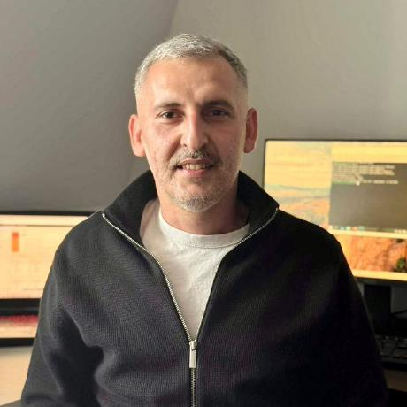

Co-founder
Founding team
Three co-founders. One long-term build.
GalileoEngine and Galileo Browser are being built through shared responsibility: platform work, technical verification, product delivery, and a standard for how progress is communicated.


Co-founder
Ionel Silviu Ghimpau
Implementation, verification & product deliveryCo-founder
Manuel Condurache
Development, collaboration & product deliveryShared standard
Equal ownership, explicit work, no inflated titles.
Each founder is presented at the same level because the project depends on all three. Areas of focus describe the work; they do not create a hierarchy between co-founders.